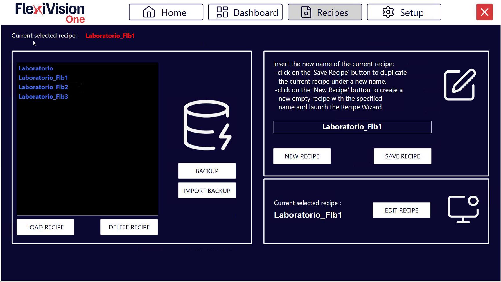

Créer une nouvelle recette#
Cette section décrit comment créer une nouvelle recette d’application dans FlexiVision One. Une recette est le contenant principal qui comprend tous les modèles de pièces, les configurations FlexiBowl®/Hopper et les paramètres du robot requis pour une application de prélèvement complète.
Note
Créer une nouvelle recette quand :
Vous travaillez avec un type de pièce complètement différent
Vous changez d’application
Il n’est pas nécessaire de créer une nouvelle recette quand :
Vous ajoutez une face de la même pièce (créez un nouveau modèle dans la même recette pour la même pièce dans des positions différentes)
Vous faites de petits ajustements aux paramètres existants (exposition de la came)
Vous ne changez que le seuil d’acceptation, le seuil de score, etc.
Aperçu de l’interface#
Avant de procéder à l’apprentissage du modèle, se familiariser avec l’interface Recipes.

Sauvegarde de la recette de base#
Avant de poursuivre, s’assurer d’avoir sauvegardé la recette de base créée lors de la configuration initiale :
1 |
À partir de la page d’accueil, cliquer sur |
2 |
Vérifier que la recette en cours est la recette de base (par ex : « Recipe_Base » créée lors de la configuration) |
3 |
Cliquer sur |
4 |
Conserver le même nom dans le champ de sauvegarde (la recette est écrasé avec les configurations mises à jour) |
5 |
Confirmer la sauvegarde |


Important
Pourquoi sauvegarder la recette de base ?
La recette de base contient toutes les configurations matérielles effectuées lors de l’installation :
Connexion FlexiBowl® (IP, paramètres)
Connexion trémie
Connexion robot (port TCP/IP)
Étalonnage caméra
Le fait de disposer d’une recette de base prête à l’emploi permet de réutiliser toutes ces configurations sans avoir à les répéter.
Étape 1 : Dupliquer la recette de base#
Pour commencer la création du premier modèle, et donc la configuration d’une nouvelle application, il est toujours conseillé de dupliquer la recette de base qui vient d’être sauvegardée. Cette fonction est utile car elle permet de sauvegarder séparément toutes les nouvelles configurations. Et cela est avantageux pour deux raisons :
Pour démarrer une nouvelle application avec le même système, il n’est pas nécessaire de répéter toutes les étapes effectuées jusqu’à présent
Si un seul élément de la configuration est modifié, il est possible de conserver les réglages de tous les autres composants
6 |
À partir de la page principale du logiciel FlexiVision One, cliquer sur |
7 |
La page de gestion des recettes s’ouvre avec la liste de toutes les recettes existantes |
8 |
Sélectionner la recette de base |
9 |
Dupliquer la recette de base |
10 |
Cliquer sur Load Recipe |
11 |
Vérifier dans la barre supérieure que le nom affiché est bien celui de la nouvelle recette Warning Toujours travailler sur la bonne recette Si plusieurs recettes sont présentes, toujours vérifier que c’est la bonne qui est sélectionnée avant de commencer les modifications. Les modifications apportées à la mauvaise recette nécessitent de refaire le travail. |
Étape 2 : Donner un nom à la recette#
Avant de cliquer sur « Save Recipe », choisir un nom descriptif.
12 |
Renommer une recette en double Conventions recommandées :
Tip Éviter les noms génériques ❌ Noms à éviter :
✓ Noms recommandés :
Format suggéré : Un nom clair facilite la gestion lorsque vous avez plusieurs recettes différentes. |
Warning
Sauvegarde des recettes
Après avoir créé et configuré une recette :
Utiliser la fonction de sauvegarde du logiciel (Backup Management)
Exporter périodiquement les recettes sur un support externe
Documenter les paramètres critiques sur papier/support numérique
Une recette bien configurée représente des heures de travail. Une protection adéquate permet d’éviter la perte de données.
Étapes suivantes#
Tip
Ce dont vous avez besoin pour la prochaine étape
Pièces physiques à reconnaître (au moins 10-15 pièces)
FlexiBowl® vide et propre
Si l’outil robotique utilisé est une pince, nous aurons également besoin de deux objets autres que les pièces à modéliser, qui serviront de simulateurs pour l’empreinte de l’outil.
Feuille pour noter les coordonnées du robot (X, Y, RZ)